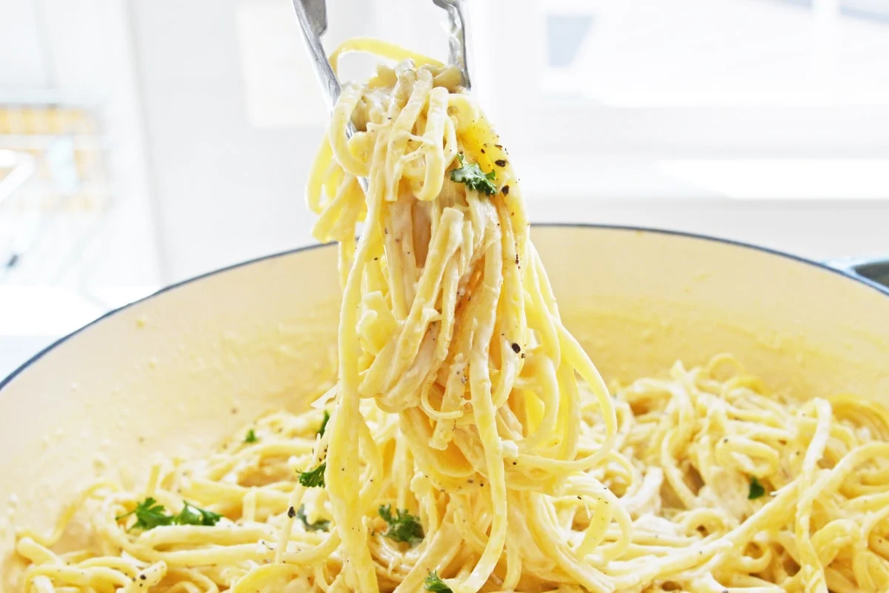

Parmesan Garlic Linguine

What is Linguine?
Long and narrow, linguine is like if a strand of spaghetti was flattened. It is great for
substantial, heavy sauces.
It translates to "little tongues".
Ingredients
- 1 pound linguine
- 2 tablespoons olive oil
- 4-5 cloves garlic, minced or pressed
- 8 ounces cream cheese, softened and cut into smaller cubes
- 1/2 cup parmesan cheese, plus more for topping
- 2-3 tablespoons heavy cream
- 1 cup pasta water
- Coarse or flaky salt
- Freshly Ground Pepper
Instructions
- Cook pasta according to package directions. Cook to al dente, or preferred softness. Drain and then return
hot pan to stovetop over medium heat.
- Add olive oil and garlic. Cook for 3-4 minutes or until garlic starts to brown and becomes fragrant.
- Add cream cheese, stirring while it heats and melts, approximately 3-4 minutes.
- When melted, whisk in Parmesan cheese, heavy cream and pasta water until blended
- Toss with hot pasta.
- Plate and top with freshly grated Parmesan cheese, flakey or coarse sea salt and freshly ground pepper.